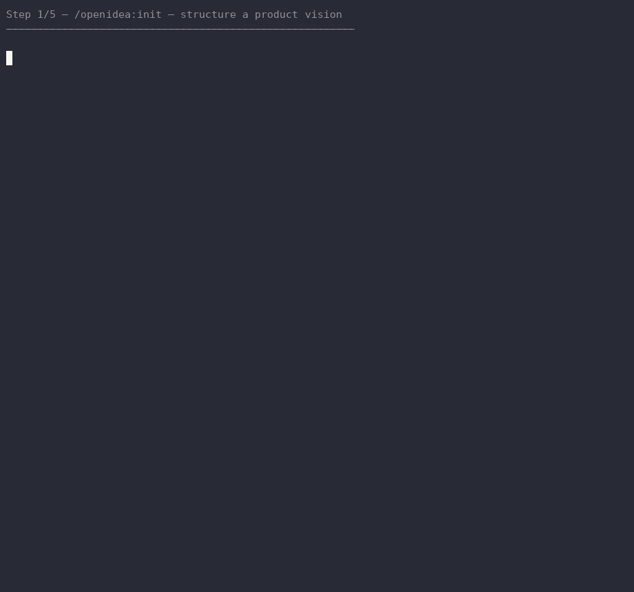

OpenIdea manages a product idea lifecycle end-to-end, file-based — vision, capture, evaluation, a roadmap, then a drafted spec handed to OpenSpec. Nothing lives only in a chat thread.

plugin marketplace add pimlabs/openideaplugin install openidea@pimlabsinit turns a vision, told in your own words, into BRIEF.md before any idea capture starts.
evaluate checks captured ideas for overlap, and asks before recommending a status change.
plan arranges ready ideas into ROADMAP.md — nothing still captured slips through early.
spec-draft writes an OpenSpec proposal, design, and tasks file straight from a milestone.
compile writes the narrative version, export packages the technical handoff — only when either is actually needed.
scripts/test.sh validates the plugin and smoke-tests all 8 commands from an empty directory.
Structure a product vision into BRIEF.md.
Capture a new idea, free-form or extracted from notes.
Check captured ideas for overlap or conflict, recommend a status.
Arrange ready ideas into ROADMAP.md.
Generate an OpenSpec proposal, design, and tasks from a milestone.
Compile ready ideas into a client-facing proposal narrative.
Package a milestone's technical content for external handoff.
Read-only drift audit — OpenSpec output against the source ideas.